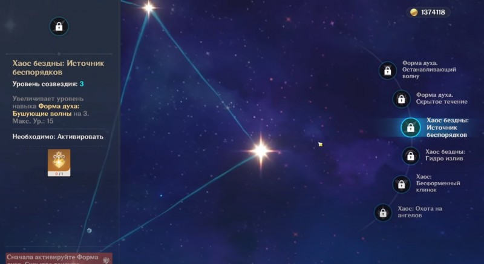
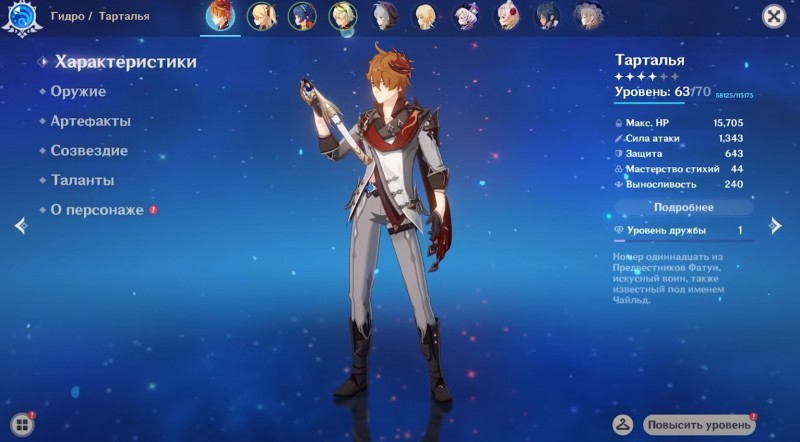

Гайд на Тарталью
В Genshin Impact Тарталья является мощным дальнобойным персонажем, относящимся к классу Гидро. Если вам посчастливилось получить Чайлда в рамках Молитв и изучения баннеров, то наверняка будет интересно узнать про лучшие билды для него. Мы также распишем его основные способности и преимущества, чтобы вы смогли решить, нужен ли данный боец вашей текущей команде.
Навыки Тартальи
Чайлд интересен тем, что его базовая способность влияет на тип основных атак. В одном режиме он будет использовать дальний лук, а в другом – холодное оружие. Каждый из них добавляет разные эффекты ударам при применении Отлива, что позволит вам выбирать стиль игры, постоянно переключаясь между ними.
Его ульта тоже имеет два разных режима, но каждый из них будет наносить мощный гидроудар. В целом его дальнобойные атаки вызывают Отлив, а удары ближнего боя «активируют» его. Все это делает данного персонажа крайне интересным основным или второстепенным дамагером. Ниже мы подробнее рассмотрим его умения.

Дождь расставаний: обычная атака – позволяет выпустить до 6 стрел из лука; заряженная атака – дает возможность сделать прицельный выстрел, наносящий дополнительные повреждения. В последнем случае с определенной вероятностью противник получает урон от Гидро и негативный статус Отлив. Если Тарталья ударит по врагам с данным эффектом, то они будут получать Гидро урон по площади.
Форма духа: бушующие волны (элементальный навык) – позволяет нанести до 6 ударов оружием ближнего боя. При удерживании кнопки умения персонаж выполняет перекрестный удар, наносящий Гидро повреждения (расходует выносливость). При атаке врагов с эффектом Отлив герой наносит Гидро урон по площади. Эту способность можно использовать в течение 30 секунд. Чем дольше используется данная стойка, тем больше потребуется времени на восстановление навыка.
Хаос: Опустошение: дальнобойная атака (Вспышка хаоса) – выпускает гидро стрелу, наносящую AOE-урон от воды и накладывающую Отлив; атака ближнего боя (Свет погибели) – осуществляет мощный удар по площади, наносящий урон от воды, и способный вызвать Отлив-взрыв (водяные взрывы, которые наносят повреждения по площади).
Не кончается пытка (пассивное умения) – возвышение 1: повышает продолжительность действия Отлива на 8 секунд.
Водяной меч (пассивное умения) – возвышение 4: накладывает Отлив при нанесении критических ударов и использовании стойки ближнего боя.
Мастерское владение оружием (пассив 3) – повышает уровень базовой атаки всех членов вашей группы на единицу.
Таланты
У Тартальи есть несколько мощных перков, однако вам потребуется немало удачи, чтобы получить доступ к по-настоящему мощным талантам. К сожалению, этот момент прокачки завязан на банальной случайности.
Уровень 1 – Форма духа. Останавливающий волну: ускоряет перезарядку «Бушующих волн» на 20 процентов.
Уровень 2 – Форма духа. Скрытое течение: персонаж получает 4 элементальной энергии после победы над противниками со статусом Отлив.
Уровень 3 – Хаос бездны. Источник беспорядков: повышает уровень «Бушующих волн» на 3 Максимальный уровень 15.
Уровень 4 – Храм бездны. Гидро излив: если герой находится в стойке ближнего боя, то каждые 4 секунды противники с Отливом получают повреждения от Отлива-удара. В ином случае активируется Отлив-вспышка. Если эти эффекты вызваны талантом, то на них не действуют стандартные ограничения в плане продолжительности действия.
Уровень 5 – Хаос. Бесформенный клинок: повышает уровень «Опустошения» на 3. Максимальный уровень 15.
Уровень 6 – Хаос. Охота на ангелов: если «Опустошение» кастуется в стойке ближнего боя, то время восстановления «Бушующих волн» сбрасывается. Активируется лишь после возврата в стойку дальнего боя.
Основной Гидро DPS
Обладая самым высоким в игре множителем взрыва стихии, этот персонаж может наносить огромный Гидро урон. Как и Дилюк, он становится неудержимым при наличии высокоуровневых созвездий, однако даже без них он может стать чрезвычайно могущественным дамагером. Если в вашей команде имеет Ноэлль или другой Гео персонаж, то можете заменить указанные ниже артефакты сетом «Встречная комета».
В качестве оружия советуем использовать следующие луки:
Небесное крыло (5-звездочное) – повышает критический урон на 20 процентов. Дает 60-процентный шанс нанести удар по площади, равный силе атаки. Происходит раз в 4 секунды. Прекрасный вариант для Тартальи, но вероятность его получения весьма низка.
Ржавый лук (4-звездочный) – повышает урон от обычных атак на 40 процентов, но снижает повреждения от прицельного выстрела на 8 процентов.
Бесструнный (4-звездочный) – повышает повреждения, наносимые элементальным умением и взрывом стихии на 24 процента.
Зелёный лук (4-звездочный) – в случае попадания простым или заряженным выстрелом с 50-процентной вероятностью возникает Циклон, притягивающий врагов и наносящий им 40 процентов урона каждые полсекунды на протяжении 4 секунд. Эффект проявляется раз в 14 секунд.
Что касается наборов артефактов, то лучшим вариантом будет собрать сет «Сердце глубин», 2 элемента которого повышают Гидро урон на 15 процентов. Если собрать 4 предмета, то после применения элементального умения урон от обычных и прицельных выстрелов возрастает на 30 процентов на 15 секунд. Добыть этот комплект можно в подземелье «Пик Виндагнира».
Если у вас не получается собрать полный сет, то вы можете использовать два следующих неполных комплекта:
Сердце глубин: 2 предмета – повышают Гидро урон на 15 процентов.
Церемония древней знати – 2 предмета: Урон от взрыва стихии повышается на 20 процентов. Можно получить при прохождении подземелья «Чистая вода и горная пещера» в Ли Юэ.
Небесное крыло (5-звездочное) – повышает критический урон на 20 процентов. Дает 60-процентный шанс нанести удар по площади, равный силе атаки. Происходит раз в 4 секунды. Прекрасный вариант для Тартальи, но вероятность его получения весьма низка.
Ржавый лук (4-звездочный) – повышает урон от обычных атак на 40 процентов, но снижает повреждения от прицельного выстрела на 8 процентов.
Бесструнный (4-звездочный) – повышает повреждения, наносимые элементальным умением и взрывом стихии на 24 процента.
Королевский лук (4-звездочный) – после нанесения повреждений врага вероятность критического попадания возрастает на 8 процентов. Эффект суммируется до 5 раз и пропадает после выполнения крита.
Берсерк: 2 предмета – повышают вероятность нанесения критического урона на 12 процентов. Выпадает с элитных боссов.
Азартный игрок: 2 предмета – повышают урон от элементальных умений на 20 процентов. Можно добыть в подземельях «Чистая вода и горная пещера» и «Пик Виндагнира».
Конец гладиатора – 2 предмета: Атака повышается на 18 процентов. Можно выбить из элитных боссов.
Церемония древней знати – 2 предмета: Урон от взрыва стихии повышается на 20 процентов. Можно получить при прохождении подземелья «Чистая вода и горная пещера» в Ли Юэ.
Основной дамагер: Тарталья
Второстепенный дамагер: Сян Лин, Беннет (для создания Пара) или Фишль, Бэй Доу (для создания Электрического заряда)
Целитель: Барбара (можно заменить Ци Ци, Дионой или Джинн)
Поддержка: Син Цю (еще один Гидро персонаж, помогающий собирать элементальные частицы)
Основной дамагер: Кли (создание Пара)
Второстепенный дамагер: Тарталья
Поддержка: Беннет (собирает элементальные частицы)
Целитель: Диона
Учения, путеводители и философии о «Свободе» – добываются в подземелье «Забытый каньон» по понедельникам и четвергам.
Шеврон рядового, сержанта и офицера – добываются из застрельщиков Фатуи и улучшаются алхимией.
Осколок Формы духа – еженедельный материал босса.
Основной DPS (критический урон)
Если вы не планируете часто использовать взрыв стихии Тартальи, то можете попробовать еще сильнее увеличить его показатель атаки и вероятность нанесения критического урона. В качестве оружия в этом случае можно взять:
Далее возьмитесь за сбор артефактов. Неплохо будет смотреться следующий набор:
Эти сеты можно также попробовать заменить следующими двумя комплектами:
Сочетание с другими персонажами Выше мы уже отметили, что Тарталью можно использовать в роли как основного, так второстепенного DPS. В первом случае он неплохо будет смотреться в следующей группе:
Планируете использовать Чайлда в качестве дополнительного DPS? Тогда соберите следующую команду:
Прокачка Тартальи
Для повышения навыков необходимо: